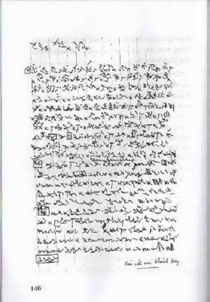
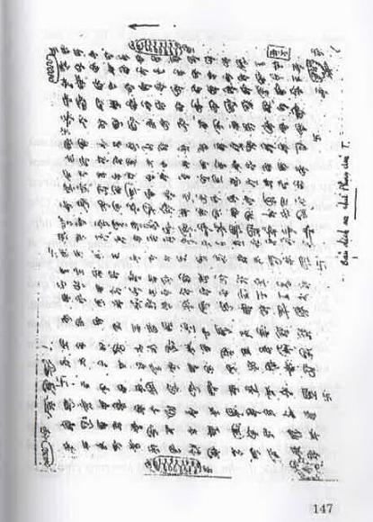

Ngoài khả năng chữa bệnh cho dân, biết trước sự việc, T. còn nhiều khả năng kỳ lạ khác, không thể tin nổi, nhưng toàn là chuyện thật. Ở Trung Quốc, Viện nhân thể học gọi những người có khả năng đặc biệt là những người có "công năng đặc dị". Khoa học hiện đại chưa giải thích được, nhưng công nhận là nó đang hiện hữu, không thuộc phạm trù mê tín dị đoan. Những khả năng đặc biệt khác của nhân vật này cũng lắm màu nhiều sắc.
Trước hết nói về Khánh Duy, một em bé có liên quan đến những khả năng của T.. Năm 2000, Khánh Duy đã một thời làm xôn xao dư luận trong giới khoa học nói chung, các nhà nghiên cứu tâm linh nói riêng. Chuyện Khánh Duy hơi dài, ở đây chỉ đóng khung trong những chuyện có liên quan đến nhân vật chính của tập truyện.
Khánh Duy năm nay (2003) vừa tròn 12 tuổi, đi học bình thường như những đứa trẻ khác. Năm 2000, Khánh Duy mới 9 tuổi. Vậy mà hàng năm cứ đến ngày Tết, cậu bé này có viết một bản bằng một thứ chữ lạ không ai đọc được nên không biết nội dung viết những gì.
Chuyện đó như sau.
Khánh Duy là con một chị quê ở tỉnh Phú Thọ, đã đỗ hai bằng đại học, đã từng ở Liên Xô (cũ), nhưng sau khi sinh con, chị bỏ việc cơ quan, đưa con về Hà Nội mở quán cơm chay sống qua ngày để nuôi con khôn lớn. Tôi quen chị do đến ăn cơm chay ở quán chị. Chị cho biết vào dịp Tết năm 2000, Khánh Duy có viết một bản chữ lạ. Tôi bảo chị đưa tôi xem thử. Chị bảo không được, con nó biết nó la chị. Không ngăn được tính tò mò, tôi bảo chị cho tôi xem rồi trả ngay, nó không biết đâu. Chị buộc phải lấy cho tôi xem. Tôi thấy một thứ chữ lạ quá, xưa nay chưa từng thấy bao giờ. Tôi năn nỉ chị cho tôi mượn nửa giờ thôi. Cuối cùng chị đồng ý. Tôi cầm ngay đi phô tô, chỉ 15 phút sau cầm về trả chị. Vậy mà khi đi học về Khánh Duy biết, nói với mẹ: "Mẹ lấy bản viết của con đưa cho ai con biết rồi. Con đã bảo mẹ không được đưa cho ai xem cơ mà!”. Nói xong Khánh Duy đốt luôn tờ giấy.
Có bản viết rồi, tôi phô tô thêm mấy bản, đưa cho các nhà nghiên cứu nhưng không ai đọc được. Chẳng lẽ chịu thua sao? Tôi nghĩ đến T., thời gian này tôi đã quen T. ba năm rồi, biết T. có nhiều khả năng may ra T. có thể đọc được. Quyết như thế rồi, nhưng bận không vào T. được. Nhân có bác Quyên cán bộ địa chất nghỉ hưu về thăm quê cũng là huynh đệ của T.. Tôi nhờ Quyên đưa cho T. xem, nếu được dịch ra luôn, tôi sẽ vào sau. Sau đây là bản viết của Khánh Duy cùng với bản dịch ra chữ Phạn và bản dịch ra chữ quốc ngữ của T.


Bản dịch ra chữ quốc ngữ của T.
Linh ấn thư!
Chứng minh sở đắc cầu thiên địa!
Nhân Trần đang đau khổ lắm của kỳ này, khó ai mà hiểu được. Chỉ có các bậc thiên linh trả lời tất cả mọi sự việc hiển diện cho kỳ này. Ta nói để bày tỏ đến tất cả những gì mà còn thảm hại, bi kịch ở hành tinh. Các người hãy đề phòng thiên tai dồn dập cứ diễn tiếp. Người thì gây thảm hại cho nhau cũng không ít (…………….). Ta nói rằng chỉ có các vị thiên sứ về mới giúp được nhiều việc nguy kịch sẽ diễn biến sau này tại quả đất các người. Nói về nền tâm linh. Ai có thân có mạng, có duyên hãy cố gắng lên, đừng bỏ phí chút thời gian vàng ngọc tại kỳ này mà không hành trì. Sau này đến việc mà không giúp được việc gì cho nhân loại, cho chúng sanh thì cũng đừng hối tiếc Ta nói... …………………. Có một đám mây đen ùn kéo đến + ba tiếng nổ không vừa và trời nổi giông tố, có trận nóng tăng nhiệt độ kinh khủng làm sức chịu. đựng không nổi, và có ngọn gió lốc đi như tên bay, lúc đó làm rung chuyển cả bầu trời. Sẽ có một căn bệnh lạ xuất hiện, lúc này khoa học không tìm nguyên nhân được (không tìm thấy vi trùng). Căn bệnh này chi các bậc thiên linh mới giúp được thôi.
Ngày......................... sẽ có tác động. Đây lời ta nói đến tháng 7 - 8 các chư thiên về mượn thân, đầu thai giúp cho nhân loại nhiều việc hay (2000).
Phần ta cũng không xa, thời gian ta cũng sẽ giúp đất nước nhiều việc. Ta hẹn thư sau.
G.C.
"Tôi chỉ biết bấy nhiêu dịch lại do chữ thiên của Khánh Duy viết ra. Có câu "Thiên cơ bất khả lộ". Tôi còn muốn đưa rộng thêm ý trong thư nhưng sợ lỗi ý trời đất. Tôi chỉ dịch ra phần cơ bản và tóm lại ý để ai xem tự mình rút ra kết luận theo hiểu biết mỗi người, trong thư cho nói khi nhận điển lực, không cho ghi, chép, người có ý, lộ lời sai ý".
Trong bản dịch ra chữ quốc ngữ, T. không dám dịch toàn văn vì sợ lộ thiên cơ và đụng tới vấn đề chính trị, các nhà nghiên cứu, các bạn thông cảm.
Một tuần sau, tôi vào gặp T. thì T. đã dịch xong. T. còn muốn dịch ra bản chữ nho nhưng tôi bảo thôi, không cần đâu. Tôi kể lại cho T. nghe về chuyện lạ của cậu bé 9 tuổi Khánh Duy. Tôi định nói ngày sinh tháng đẻ của cậu bé này để T. xem có điều gì lạ không, mẹ Khánh Duy đã nói cho tôi biết. T. đưa tay bảo đừng nói để T. nói cho.
T. lấy tờ giấy viết tên Nguyễn Khánh Duy bằng chữ Phạn, ngồi thiền, đưa hai tay lên trời khua mấy vòng rồi chụp xuống tờ giấy. Làm hai lần như vậy, xong T. nói: 'Cậu này sinh lúc 2 giờ chiều ngày 9 tháng 9 năm Nhâm Thân tức ngày 9 tháng 10 năm 1992". Tôi lấy sổ tay ra đối chiếu thấy đúng y như vậy, thật kỳ lạ! T. còn nói về nguồn gốc Khánh Duy, tôi thấy không tiện viết ra đây vì nó ở lĩnh vực nghiên cứu khác. Tôi bảo khi nào T. ra Hà Nội, muốn gặp cậu bé này tôi sẽ đưa đến.
Khi hai nhân vật này gặp nhau ở Hà Nội, nói chuyện với nhau bằng thứ ngôn ngữ lạ, không ai hiểu được. Thời điểm này có đông anh em ngồi nghe. Về chuyện viết dịch và nói thứ ngôn ngữ lạ, một vài nhà nghiên cứu tâm linh cho rằng T. không làm được mà có người nhập vào hoặc điều khiển T. làm. Tôi chứng kiến một lần ở quán cơm chay, một vị tướng quân đội ta đã nghỉ hưu nói với T.: "Tôi nghe nói anh biết viết và nói nhiều loại ngôn ngữ, anh thử viết cho tôi xem được không?". T. đồng ý lấy giấy bút viết ngay một trang nhỏ, viết rất nhanh. Vị tướng công nhận tài của T., xin tờ giấy làm kỷ niệm, cũng là để về nghiên cứu.
Một lần gặp riêng T., đề cập việc T. viết, nói loại ngôn ngữ đó một vài anh em cho là có người điều khiển. T. nổi khùng nói: "Toàn nói bậy! Tôi là tôi, ai điều khiển được tôi! Vị nào điều khiển, tôi tát cho vị ấy một tát tai! Tôi viết ngay cho ông coi xem có ai điều khiển tôi không". Nói xong T. lấy giấy bút viết ngay một trang nhanh như điện rồi nói: "Ông thấy đấy, có ai điều khiển tôi không!".